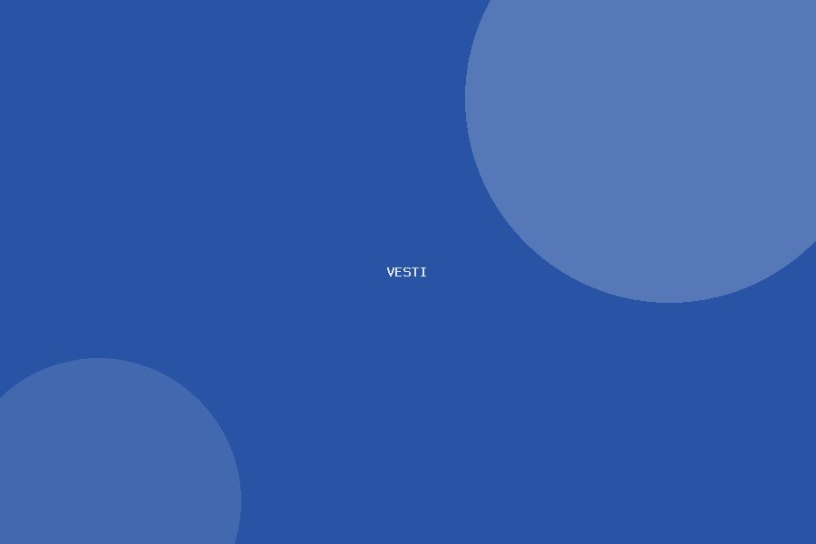
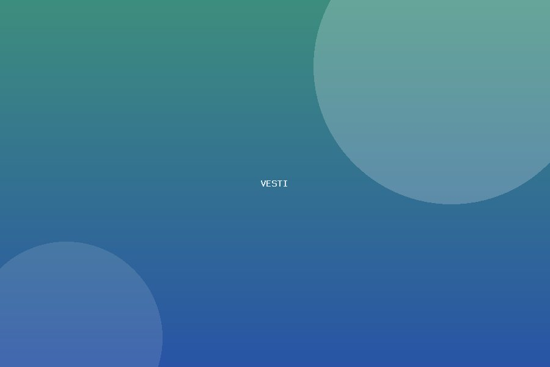
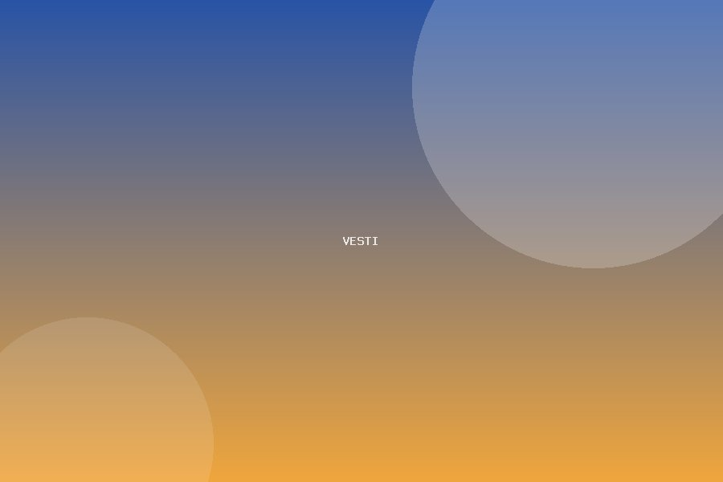

Počela nova školska godina
Svečanim prijemom prvaka i pozdravnim govorom direktora, u našoj školi je zvanično počela nova školska godina.…
Pročitaj više →
Učenici trećeg razreda posetili Narodni muzej
U okviru nastave iz sveta oko nas, učenici trećeg razreda posetili su Narodni muzej i upoznali se sa važnim de…
Pročitaj više →
Naši učenici osvojili prvo mesto na opštinskom takmičenju iz matematike
Čestitamo učenicima sedmog razreda koji su osvojili prvo mesto na opštinskom takmičenju iz matematike.…
Pročitaj više →
Novogodišnja priredba oduševila mališane i roditelje
Tradicionalna novogodišnja priredba okupila je učenike, nastavnike i roditelje u prazničnoj atmosferi punoj pe…
Pročitaj više →
Startovao ekološki projekat Zelena škola
Naša škola se pridružila projektu Zelena škola sa ciljem podizanja svesti učenika o zaštiti životne sredine.…
Pročitaj više →
Učenica osmog razreda osvojila republičko priznanje iz likovne kulture
Čestitamo učenici osmog razreda na osvojenom republičkom priznanju za likovni rad na temu zaštite životne sred…
Pročitaj više →
Održan roditeljski sastanak za sve razrede
Obaveštavamo roditelje da su održani redovni roditeljski sastanci na kojima su predstavljeni rezultati prvog k…
Pročitaj više →